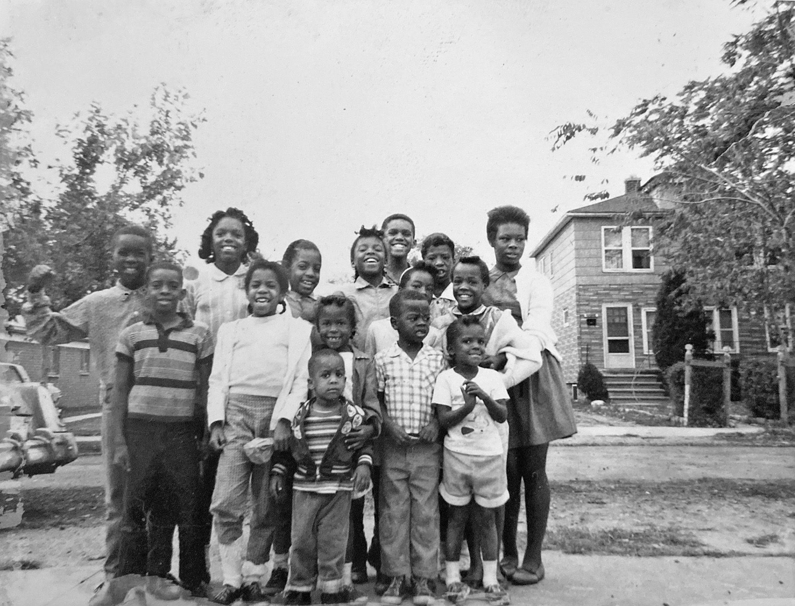

DETROIT — When they started building the wall behind Margaret Watson’s house in northwest Detroit, she knew the reason without having to ask.
As a child in the late 1930s, Watson had seen the new streets laid down like a tic-tac-toe board in the open fields where her father once planted a garden the size of a city block.
She’d roller-skated down those newly paved lanes at speeds that would have been impossible on the dirt roads that ran in front of her house.
She knew the new streets had to be for white families — not Black ones like hers — so she wasn’t particularly surprised when, in the spring of 1941, a 6-foot-high, 4-inch-thick, half-mile-long concrete fortification suddenly appeared in her backyard.
If white people were moving in, she reasoned, they’d need a way to keep her out.
“I don’t remember feeling any way about it except it was the same old, same old,” said Watson, now 93, who still lives in that house and recalled being excluded from certain restaurants and stores growing up.
The wall in Watson’s backyard was built by white real estate developers who struggled to secure financing for their white neighborhood until they cut it off from a Black one. It is one of a number of segregation walls built in the mid-20th century for this purpose and one of a few still standing.

The divider — called the “Birwood Wall,” the “Eight Mile Wall” or the “Wailing Wall” — can’t be blamed for inventing segregation. But the barrier, and the policies that led to its existence, would have far-reaching repercussions for the people, both Black and white, who lived in its shadow.
On the east side, the Black side, some residents were motivated by the wall’s arrival to advocate for change. Others felt penned in by the wall and the racism it represented. While the barricade, which ran through an alley between two residential streets, was not guarded and did not extend across intersections, the towering concrete sent a clear message about who was unwelcome to cross.
On the west side, the white side, some children who moved into the houses that sprouted along the new streets in the 1940s — now in their 70s and 80s — say they never knew the wall was there, just as they didn’t know that the houses their parents bought back then had deed restrictions barring residents who weren’t white. They never talked about race with their parents or friends, they said, or wondered why they attended the mostly white MacDowell Elementary School, which enrolled children from the west side of the wall, rather than the mostly Black Higginbotham School, which enrolled children from the east side.
“Race wasn’t a major issue at the time,” said Stephen Bean, 80, who is white and grew up near the wall. “Everybody just sort of got along.”
Whether people who lived near the wall knew of its existence, they were profoundly shaped by the racist policies and profiteering that built it, according to nearly three dozen interviews with current and former residents of the area and their descendants, conversations with experts and hundreds of pages of land and business records, historical documents and archival materials.
In a six-month investigation, NBC News and BridgeDetroit discovered that one of Detroit’s most prominent families built the wall and developed the adjacent white neighborhood. The reporting also examined the ways this single act of segregation has influenced generations of Detroiters.
The side of the wall these residents called home would later affect the sale price of their houses, the value of their next homes, and, eventually, the wealth they might inherit from their parents. Their experience in elementary school would determine the classes they took in high school, their decisions about college or the military, and the ease with which they achieved their goals. And throughout their lives, the friendships they made would frame their interactions with classmates and colleagues, with doctors and law enforcement, in social settings and in job interviews.
This is Detroit's Birwood Wall
It slices through the East Mile-Wyoming neighborhood, just below Eight Mile Road, Detroit's storied northern border.
The concrete barrier runs in an alley behind residents' homes.
The east side was originally a Black neighborhood... while the west side was developed for whites only.
Today the wall serves as a reminder of the lasting consequences of racist policies.
Eighty years later, the wall itself, now brightly painted in parts with colorful murals, no longer separates Black from white. The discriminatory policies that made the wall possible have been outlawed. Nearly all of the area’s white residents left for the suburbs decades ago, crossing nearby Eight Mile Road, which separates Detroit from its suburbs and has long symbolized the region’s racial divide. As white families left, they made space for a Black neighborhood of affordable homes to flourish.
“This community was such a vibrant community,” said Teresa Moon, 68, who moved to a house just east of the wall in 1959. “We were so well connected, and we had so much love.”
But the divisions set down in concrete on a spring day in 1941 are an enduring reminder of the reasons this country remains so starkly divided — why a nation that’s more racially and ethnically diverse than almost any other is packed, from coast to coast, with segregated neighborhoods. Parents still send their children to schools that are deeply and persistently divided by race and funded inequitably. Many still face drastically different odds of financial success. Many still view current events — elections, the pandemic, the drumbeat of viral videos that reflect fear and violence and white supremacy in America — through lenses that are blurred or focused by their race.

A 'Real Home'
The story of the Birwood Wall begins at a time when Detroit surged with ambition and wealth, when hundreds of thousands of people were flooding into the city, and when the prospect of decent jobs on the assembly line made it possible for working people to dream.
For John and Elizabeth Crews, who arrived in 1918, that dream meant a home — a “REAL HOME,” the Crewses’ daughter, Burniece Avery, later wrote in capital letters in a memoir, a home with glass windows, “beautiful curtains, nice furniture.”
That home hadn’t been possible in the drafty hut outside of York, Alabama, where John Crews made so little as a sharecropper that he wasn't able to buy shoes for his child.
It hadn’t been possible in the coal towns where the family stopped on the journey north, as they joined what became known as the Great Migration of millions of Black families leaving the South. And, at first, it didn’t seem possible in Detroit.
Though Crews found a job at American Car & Foundry, so many people were arriving in Detroit, which more than tripled in size from 1910 to 1930, that the family struggled to find a decent place to live in the few neighborhoods near downtown that welcomed Black Detroiters. They left one cramped apartment when an unscrupulous landlord repeatedly raised their rent, then lost a house when they couldn’t make monthly payments.
That’s why the Crewses did something audacious: They boarded a streetcar, rode it north beyond the city line, then walked 3 miles on a sandy, shadeless road to reach a rural patch of Greenfield Township, where a relative had tipped them off that an entrepreneur was selling land on contract to Black buyers.
There wasn’t much there. The settlement lacked public water and sewers and had no reliable transportation. But, as Avery, who was in grade school at the time in the early 1920s, wrote in her memoir, it offered her parents what they most wanted: “The dream that slowly, a step at a time, they could build a home of their own, on land of their own.”
The Crewses built a temporary tar-paper shack in the shade of a pear tree, adding to it week by week as each payday bought more lumber and supplies.
Like many of their neighbors, they built at the back of their lot, leaving the front open for a permanent home later on. But few banks would loan them money.
When the city of Detroit annexed the area a few years after they arrived, the Crewses hoped that would buoy their prospects. But the people of what Avery called “Shacktown'' weren't the only Detroiters with dreams of homeownership.
The throngs of white families who’d arrived in Detroit in those years were also living in crowded conditions. They were also looking for homes where they could plant gardens and raise children.
And as developers laid out plans for the newest parts of Detroit, they had no intention of making room for a half square-mile settlement of Black families in tar-paper shacks.
Blackstone Park No. 6
The vision for this part of Detroit was grand.
“The super subdivision with the big future,” crowed an ad that ran in the Detroit Free Press in 1925 over a sketch of elegant homes nestled among shade trees.
The ad for the Blackstone Park No. 6 subdivision promoted low prices, financing and “the restrictions that bring demand for home sites.”
Those restrictions “almost invariably” included race, said Thomas Sugrue, a New York University historian who wrote a book about race and inequality in Detroit. Living there required white skin.
Despite the developers’ vision, Blackstone Park No. 6 was slow to become a reality. Federal lenders at the time relied on color-coded maps that deemed some neighborhoods safe investments, shading them blue or green, while others were shaded red, meaning “hazardous.”
The practice, known as redlining, forced people living in red zones to borrow money at higher interest rates or resort to predatory lenders. It remains a major reason why Black Americans, whose neighborhoods were nearly always shaded red, today have about one-tenth the household wealth of white Americans, Sugrue said. “It deprived generations of African Americans of access to capital to purchase and improve homes.”
A 1939 federal housing map clearly shows red ink stamped across the Crewses’ neighborhood.
This meant the residents of Shacktown couldn’t access federal financing — and neither could the developers of Blackstone Park No. 6.
At least not until they built a wall.
Below you will see how the current Black population in Detroit compares to others today.
This next chart shows how the Black population in Detroit has grown from 1930 to 1990.
In 1939, many parts of Detroit were redlined — a federal policy that barred lending in areas the government deemed risky.
A ‘humiliating’ barrier
When construction workers began digging a trench between Mendota and Birwood streets in 1941, children came from blocks away to watch, author Gerald Van Dusen wrote in a book about the wall.
They watched for days as crews dug with an excavator, poured cement footings, then stacked concrete bricks until the wall extended the length of three city blocks.
“No one knew what to make of it,” Van Dusen wrote.
The wall’s purpose, however, quickly came into focus.
“CHARGE WALL BUILT TO SEPARATE RACES” screamed the headline across the front of the July 5, 1941, edition of The Michigan Chronicle, Detroit’s Black newspaper.
The paper, which characterized the wall as an effort to establish a “negro ghetto,” detailed a meeting of the city housing commission where a representative for the Blackstone Park development insisted the wall was “being put up simply to improve our subdivision by giving it a fixed border and trim.”
The residents of Shacktown didn’t buy that.
Avery, who by then had gotten married and built a shack next to her parents, wrote in her memoir that a community group sent emissaries to confront the developer, who refused to take down the wall.
It was “humiliating,” Avery wrote.
Even more galling was that the new houses on the other side of the wall were getting the very federal housing subsidies she and her neighbors had been trying to get for years.
And developers were circling. Avery and her neighbors found a city planning pamphlet that documented poor conditions in their neighborhood and proposed relocating them, replacing their shacks with luxury homes.
“Shall we allow a handful of hapless dreamers to stand in the way of a potential million dollars in taxes which the city could collect annually?” the pamphlet asked, according to Avery.
By then, Elizabeth Crews had become a reverend in the African Methodist Episcopal Church and a prominent voice for civil rights. Mother and daughter helped mobilize their community. They sat down to write a letter to President Franklin D. Roosevelt.
“What is the difference in our community and the one just west of us, other than they are white and we are black?” they wrote, according to Avery’s memoir.
They didn’t think a response was likely.

‘Wasn’t a part of my life’
Barry Beals was just a baby when his parents bought one of the first houses in Blackstone Park No. 6 in the early 1940s.
Now 81, he remembers foraging in the construction sites near his house for bits of wood he could use to build forts. He remembers the swingset and teeter-totter his father, an accountant who worked for the Michigan Consolidated gas company, built on an adjacent lot, which made his street a gathering place for neighborhood kids.
He doesn’t remember thinking about race. He’s white. His friends were white. He never wondered why there were few Black faces in the halls of his elementary school.
And he never knew that the house where he spent the first decade of his life had a line in its deed that barred occupancy “by any persons not of pure, unmixed, white Caucasian race,” according to land records obtained by NBC News and BridgeDetroit.
“Presumably my parents would have known about it, but generally it would not have been something that would have been discussed,” he said.
Beals never gave much thought to whether his life was shaped by measures like these.
His family left Detroit for the suburbs in 1951. He went on to get an engineering degree from the University of Michigan, moved to Maryland to work for IBM, then retired to California to be near his grandchildren.
When the civil rights movement was grabbing headlines in the 1960s, he was focused on work and his young family and didn’t think the conversation had anything to do with him, he said, just as he’s watched the Black Lives Matter protests in recent years from a distance.
“It just wasn’t a part of my life,” he said.
On the east side of the wall, however, discussions of race were unavoidable, particularly in the 1940s when a surging Black population intensified the city’s housing shortage, stoking racial animosity. A white mob tried to stop Black residents from moving into a housing project on the city’s east side. White factory workers staged strikes to protest integration, and violent clashes between Black and white residents during a 1943 race riot left 34 people dead, including 17 Black people killed by police.
The men who built the wall
The question of who built the Birwood Wall has long been shrouded in mystery.
Van Dusen, whose book about the wall was published in 2019, said he wasn’t interested in assigning blame.
“Then you would reduce it to a moment in time, a particular person,” rather than a system of racist policies, he said.
The researchers who documented the wall’s history recently in the state’s application for the National Register of Historic Places also weren’t sure who built it. They spotted a name — James T. McMillan — in the 1941 Michigan Chronicle story about the wall’s construction and speculated that it “may have been the James T. McMillan who was the president of the Detroit and Cleveland Navigation Company.” But they couldn’t confirm it.
That James T. McMillan was a member of one of Detroit's wealthiest and most prominent families. His grandfather, James McMillan, represented Michigan as a U.S. senator from 1890 until his death in 1902.
Today, members of the McMillan family are community leaders in Detroit and across the country, serving on corporate and nonprofit boards. No one has publicly suggested that the family had anything to do with the now-infamous wall.
When NBC News and BridgeDetroit reached out to Francis W. McMillan II, one of James T. McMillan’s grandsons and a member of the Detroit Historical Society board, he said he’d never heard of the wall or any family connection to it.
“It’s ancient history, dear,” he told a reporter during that call. “Why are you digging around in something that is maybe nothing at all?”
The grandson, 83, who is known as Sandy, said his family had invested in banking, railroads and other industries — not in real estate — and he raised concerns that unproven accusations could harm his forebears’ reputation.
“They did a whole bunch of really great things for Michigan,” he said.
Soon afterward, NBC News and BridgeDetroit confirmed his grandfather’s ties to the wall. Business records obtained from state archives for the Nottingham Land Company, which developed Blackstone Park No. 6, listed home addresses for members of the McMillan family — James T. McMillan and his two sons — that match addresses for the family listed in newspaper articles. One of the sons was Sandy McMillan’s father.
“As you can imagine, I’m shocked and this is difficult for me to hear,” Sandy McMillan wrote in an email after reviewing the records. “I see that this is an important story that needs to be told.”
He declined to comment further.
Sandy McMillan said in the initial call that he didn’t think his grandfather was racist. James T. McMillan, who died in 1946, had not created the policies that made it harder to finance housing near redlined neighborhoods.
But, as a self-described “history guy,” Sandy McMillan added that he hoped an examination of the wall’s construction could be instructive.
With history, he said, “you learn from the good things and the not so good things, and you don’t hide either of them.”
‘Immeasurable’ consequences
White families didn’t last long in Blackstone Park No. 6.
Members of the neighborhood association vigorously defended the racial rules in their deeds for several years, even taking steps in 1944 to expel a Chinese war refugee who moved in with her children, according to newspaper articles.
But in 1948, the Supreme Court made it illegal to enforce racial deed restrictions, and by the following year, a row of houses intended for Black buyers had sprung up on Mendota, the street just west of the wall.
In 1953, Mary Binion Terry and her 10 siblings were among the first Black children to move onto nearby Manor Street, she said.
Now 82, she remembers watching from her front yard as a pair of white real estate agents worked her block, encouraging white residents to sell.
“They were selling like hotcakes,” she said. “Every day, for weeks, there would be people moving out and Black people moving in.”
When she and her siblings enrolled in the local elementary school, they were among the first Black students there. Teachers gave them a second intelligence test because they thought their first scores were too high for Black children, she said.
But within a few years, Black families were the majority. Two Black neighborhoods — one built by Black activism, the other by white flight — became a single community, known as Eight Mile-Wyoming, with a wall in the middle.
Jeffrey Edison, 70, whose family moved to the neighborhood in the early 1950s, said everything he and his friends needed was in the neighborhood. The watchful eyes of family friends like the Binions meant they couldn’t make trouble without someone telling their parents.
Families in this part of Detroit sang in the choir, prayed together and sent their children to Sunday school at churches like Oak Grove African Methodist Episcopal Church, which was co-founded by the Crews family. Lifelong friendships took root at the Johnson Recreation Center, which became a gathering place for neighborhood children, including a Boy Scouts troop. It had a pool — rare for Black neighborhoods at the time.
The neighborhood, where well-built houses had front and back yards, new sidewalks and space to ride bikes, offered Black Detroiters a lifestyle that wasn’t available in the overcrowded neighborhoods near downtown, said Herb Boyd, who grew up in the neighborhood and wrote “Black Detroit: A People’s History of Self-Determination.”
By the time they got to high school in the 1960s, the area’s Black children were aware of the deep racial divisions outside of their community. Inspired by demonstrations nationwide, students at Mumford High School formed a Black Student Union and staged sit-ins and walkouts, challenging the school’s curriculum and pushing for more Black teachers, Edison said.
“We as students wanted more say,” said Edison, an instinct that guided him as he went to Howard University, a historically Black college, and as he returned to Detroit to become a defense attorney.
But while the mass departure of the city’s white population helped shape strong Black neighborhoods like Eight Mile-Wyoming, the economic consequences for Detroit were devastating.
Few of the white former Blackstone Park No. 6 residents interviewed recently said they’d thought about how their family’s decision to leave drove up home prices in the suburbs, such as Farmington Hills, where the average home now sells for $318,000, according to Zillow, while driving them down in the city, where the average house now sells for $51,000. Most said they hadn’t considered that this might still be a factor in the economic differences between their families and the ones who moved into their former homes.
When asked why their family moved to the suburbs, none of these white former residents mentioned race. They talked about bigger houses or a desire to be closer to friends and relatives.
But race was very much a part of the federal and city policies that supported white neighborhoods with home financing and destroyed Black ones in the name of “urban renewal,” said Jacob Faber, an associate professor of sociology and public service at New York University.
In the 1950s, as white Detroiters began to move to the suburbs, some leaders of those communities made it clear Blacks weren’t welcome. In Detroit, Mayor Albert Cobo, who ran for office promising to stem a “Negro invasion,” demolished historic Black neighborhoods, building freeways and mixed-income housing developments that displaced Black residents. He then blocked proposed federal housing projects intended for Black families that he thought were too close to white neighborhoods.
Efforts like these not only segregated Detroit — they kept it that way, Faber said. He pointed to his study showing that cities redlined by the federal government are far more segregated today than cities that weren't.
A changing city
The protective bubble that surrounded Teresa Moon during her childhood just east of the wall began to dissolve when she was in high school.
Her parents never told her why the wall she could see from her family’s modest yellow brick house was built. When she joined the first class of an integrated middle school in 1966, she didn’t know that her new relationships with white peers would be fleeting.
But Detroit was changing. An uprising in 1967 — five days of clashes between Black residents and police, in which 43 people were killed, most of them by police or the National Guard, and hundreds of buildings were destroyed — became a visible display of racial strife in America. By the time Moon graduated from Mumford High School in 1970, most of the white classmates she’d started with were gone.
A city once flush with promise saw its tax base crater as the population plunged. Factories were closing. Detroit’s Big Three automakers started automating and moving jobs overseas.
“There was a lot of inequality in everything,” Moon said. “It wasn’t just the redlining to live in a certain area. It was our inability to accumulate generational wealth. It was our education, everything.”
Moon went to work for the city in 1979 as a dental assistant in the health department, when Detroit’s first Black mayor, Coleman A. Young, made a point of putting residents to work. She’d inherited her parents’ house on Griggs Street, where she’d always felt at home, but she began to worry about drugs and crime. She recalled the man she saw shot in front of her house in the 1970s and the sound of gunfire shattering the peace through the 1980s.
“People became more to themselves,” she said. They no longer showed up with shovels on snow days to clear their neighbors’ walks.
She hesitated before sending her son, born in 1981, to the park across from her house, where the grass was overgrown and weedy. “It was messed up over there,” she said.
She never considered leaving the neighborhood she loves, but many of the people she grew up with were heading out. The Black middle class began moving in high numbers in the last decades of the 20th century, following the same path to the suburbs their white neighbors had taken years earlier. That further ravaged the city’s tax base and crippled services, especially in the years leading up to 2013, when Detroit declared the largest municipal bankruptcy in U.S. history.
Detroit’s exit from bankruptcy has been heralded as a turnaround, enabling a troubled city to get out from under debilitating debt. But retired city employees like Moon saw their pensions and health care slashed. Residents of Eight Mile-Wyoming complain that the city’s revival has been too focused on downtown, where restaurants and condos now cater to the white children and grandchildren of the people who left long ago.
And while this neighborhood of well-built homes has fared better than other parts of Detroit, the mortgage crisis, followed by a foreclosure crisis, has taken a toll. A city once known as a bastion of homeownership now has more renters than owners.
Watson, who inherited her parents’ house on Birwood Street and lives there today, laments that her neighborhood lacks the recreation centers and schools that once made it a haven for families.
“The kids don’t have anything to do, and I don’t have anything to do,” she said. “They’re tearing up my neighborhood.”
‘It’s important that people know’
Over the last 80 years, the Birwood Wall has come to mean different things to different people.
Avery was angered by it, said her granddaughter, Rose McKinney-James.
“She resented those who were behind the decision to create it,” McKinney-James said.
But Avery, who went to college late in life and became an educator, also understood the wall’s power to teach.
Avery raised McKinney-James and her brothers in a large house in Boston-Edison, a historic Detroit neighborhood where the family moved in the 1950s. But Avery always brought her grandchildren back to the old neighborhood for church on Sunday and often pointed out the wall, McKinney-James said.
“There were frequent conversations about the history of the wall and what it meant to the development of the community,” she said.
McKinney-James, 69, sees the wall as a “catalyst” for her own success, a symbol that inspired her to go to law school, to work in Washington for the first Black woman elected to Congress, and to eventually become a government and business leader in Nevada.
The wall, which a local artist painted with murals in 2006, still serves an educational role, said Moon, who often sees tour groups pulling up and makes a point of greeting them.
The visitors are mostly white and “very liberal,” she said. “I’ve seen people out there crying about it and telling me how sorry they are that it was ever done.”
The wall today does the opposite of what it was designed to do, Moon said. It brings people together.
An annual cookout on the second Saturday in August has brought generations of Detroiters back to the neighborhood for the last 30 years. Most of them are Black, but some white friends and neighbors come, too. The event T-shirt for a recent gathering featured a picture of the wall. A neighborhood group distributed bracelets that said “Eight Mile For Life.”
Soon, visitors will see a plaque recounting the wall’s story and marking it as on the National Register of Historic Places. But Moon, who tends the flowers in the park in front of the wall, still plans to greet visitors.
“I want them to know not just the logistics of the wall,” she said. “It’s important that people know about my community.”